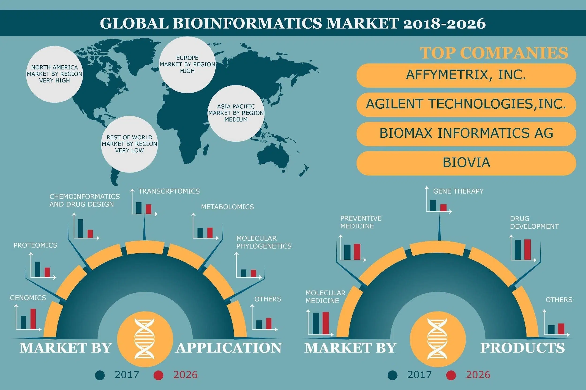
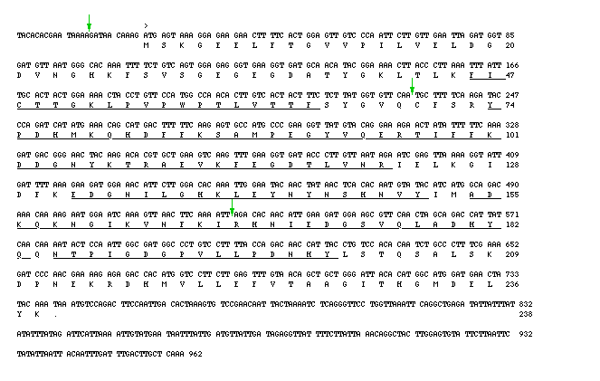

Sequence and analyze genomes
Identify genes and their functions
Predict protein structures and functions
Analyze gene expression data
Design new drugs and therapies
Bioinformatics is a global field driven by major institutions like the National Center for Biotechnology Information (NCBI) in the US and the European Bioinformatics Institute (EMBL-EBI) in Europe, with a strong presence in countries with leading universities like the US, UK, and Canada. Its global growth is fueled by advancements in AI and personalized medicine, creating diverse career opportunities in academia, healthcare, and various industries worldwide.

This is a practice webpage for Bioinformatics.
Here's a small demo for you to see how bioinformatics can be helpful using the example of GFP(Green Flourescence Protein) pipeline which shows how a complex sequence can be coverted to relatively beautiful images showing the 3D structures.
